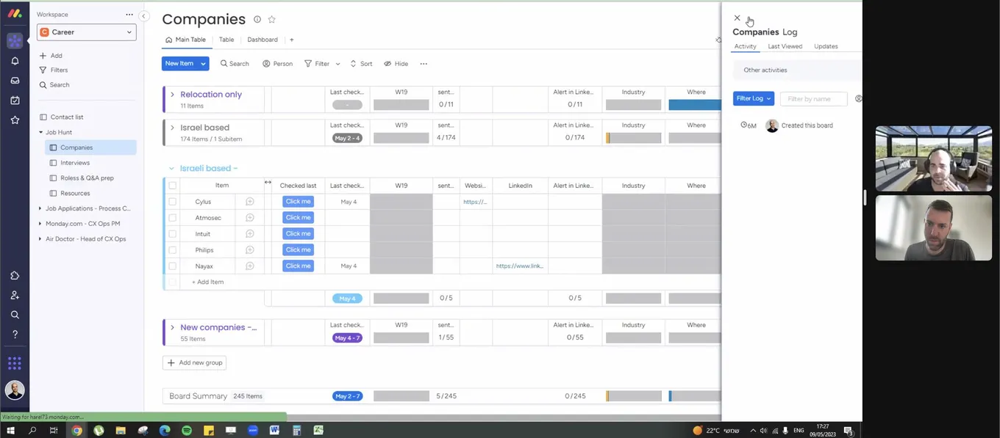

Managing your life like a product roadmap
Originally posted on LinkedIn, May 9, 2023.
My friend Roy Harel manages his life in monday.com like a product. He has boards for a roadmap covering the year ahead, quarterly goals, the tasks derived from those goals, and a sprint board.
He manages his career and job search in a separate workspace. The board shown in his screenshot collected companies from across the Israeli tech industry and tracked when he last checked each one for relevant OPS roles. Another board managed each hiring process from the phone interview through hr, along with all the relevant information about each company. He even kept a board of interview questions and answers.
It is a real supertool. Roy, I’m proud of you.
